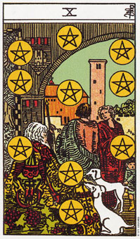

【关键词】富裕 事业团体 物质成功
图中是一个温馨的家庭。老人正舒适的坐在屋里，两只象征家庭辑穆地狗围绕在她身前，门外站着儿子和儿媳，小孙子调皮的抚着一只狗尾巴。钱币错列成行，组成生命之树的符号。星币十描述着一个财务基础稳固的家庭，传统家庭的子承父业。星币十也代表企业(家族性)等以金钱与成功为目标的团体，甚或机构，一些成功的事业伙伴。
推测：情爱方面，星币十可能显示双方在事业上契合伙伴，同时暗示缺乏情感缺乏交流，或不重视这方面的沟通。另外，也可代表搀杂了其他物质因素的婚姻。
星币十意味物质上的成功。
星币十画的是一个安稳而舒适的居家环境。从墙上盾形家徽看得出这是一个富裕而巩固的环境。这里有动物，小孩，结实累累的果树，以及作为隐秘和保护之用的高墙。天空是蔚蓝的，而城镇则紧邻于旁。简单的说，这个家庭拥有能提供舒适物质环境的一切条件。
那么，为什么每个人都没有面对着别人呢?这老人是坐着的，他的注意力放在动物们的身上，年轻人背对我们， 而女人也没有面对他，却稍稍侧着脸继续和他谈话。小孩子被忽略了，这些人彼此之间也没有真正的关联。它们得到别人所渴望的物质世界，不过很显然这也使他们感到沉闷，并陷入公式化的生活中，一旦这种公式消失，将无所适从。
星币十是整组牌可能性的充分显示。他缺乏权杖的热情、宝剑的理想以及圣杯牌的情感。在这里可以找到物质上的安全感和稳定，但也付出了代价。
大体上的意义
星币十是一张代表物质成功的牌。它代表在生意上或大宗买卖(房子、车子、船只或生意)的完成或成功。如果它和其他两张正立的10，一起出现时，可能代表签署合约。
10所意指的成功是长久的。而在事业的分析上，可能意味着一项成功带来更多的成功。在有关卖掉房子或做生意的问题上，10显示钱就在那里，交易也快完成了。
在事业的分析上，10说明了一项基础稳固的事业，其中包含了生前和成功的机会。在有关法律案件的问题上，这张牌和星币六可以代表一项有利于你的支付。
正位含义：
1.亲人渐入暮年，意味着遗产再一步一步向你靠近。
2.传统家庭子承父业，维持一定用度。
3.家庭很好，物质丰富，儿孙满堂，妻贤子孝。
4.团体事业运作状态良好。
逆位含义：
1.团体中某种程度的不和即将出现，而症结所在通常是金钱。
2.投资合伙以暂缓，理财务必谨慎。
3.失去遗产。
4.与亲人对立，家庭陷入不和。
5.失窃，或其他方面有一定损失。
6.偏护自己得家人，有失公平。
两性关系上的意义
星币十描述的是一种和事业有关的两性关系。或许你正在和伴侣做生意，或者是你经由工作或生意往来而认识了这个人。财务上的大成功是显而易见的，因为你的伴侣在财务上相当可靠;或者它可能意味着，你和伴侣在生意场上是一个精明干练的组合。
在这里你找不到圣杯10的那种亲密，不过在这段关系中，你所期待的优先顺序或许原本就不一样吧。
倒立的星币十
星币十的倒立可能意味一个企业缺少稳固的基础。当星币十倒立时，有时候在正立10中显示出来的苦闷，会引起财务或情感上的冒险。这是一张赌博的牌。不止赌钱，也在生意或财务上冒不必要的危险。
在事业的分析上，星币十的倒立可能暗示着，在少数可能的机会当中却有着学多对手。意味着缺钱，或相关公司的财务出了问题。
在两性关系分析当中，星币十倒立显示你太过注重有形的事物了，可能会引起感情上的孤独。它也可形容一种不稳的财务状况;例如，在购屋的问题上，它暗示你可能遇到了某些财务上的难题，或者你可能是高估了自己的财务状况。